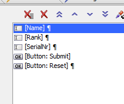
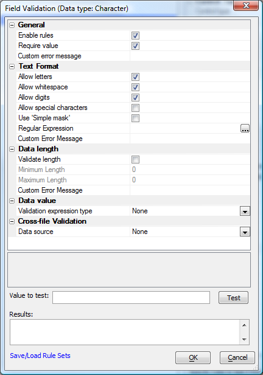
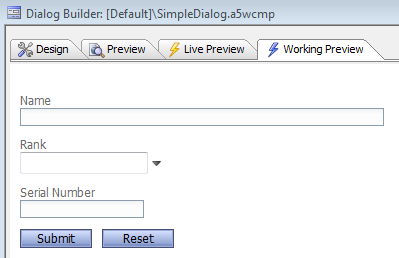
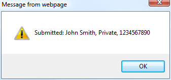

Simple UX Example
In this example we will create a simple dialog with three fields, add some validation to the fields, and add code to display the submitted values in a pop-up message. The example is the minimum information an American soldier had to give to a captor under the old Code of Conduct. (Other countries added date of birth to the list.)
Create a new Dialog web component, and add 3 textbox controls: Name, Rank, and SerialNr. Then add the Defined Control Submit-Reset. Your tree view should look like this:

Now add a style of "width: 30em;" to the Name control and change the Label of the SerialNr control to "Serial Number". For the Rank control, check Lookup, set the Lookup type to Edit-Combo List, and edit the Lookup definition to include the common ranks in your country. Ours was:
Admiral Captain Colonel Corporal Ensign General Lieutenant Lieutenant JG Major Petty Officer Private Sailor Sergeant
Now set the validation rules for all three textbox controls:

Leave the Immediate validation set at "Client-side only."
If you know that the serial number has to be numeric, you might handle the SerialNr field differently. Instead of using this character validation rule for the SerialNr field, you can set the control's variable type to Numeric and use a numeric validation rule that only accepts integers.
Try a working preview of your dialog. It should look roughly like this:

Your design mode Wysiwyg view should look similar. In Working Preview mode you can test that your Edit-combo dropdown and validation rules are firing as you expect; in design mode Wysiwyg view you can change control properties and see the result immediately.
Now edit the end of the afterDialogValidate server-side event code to look like this (the new code is in blue):
...
'e.javascript - if you want to send some javascript back to the browser, set this property.
'debug(1)
e.javascript="alert('Submitted: "+e.dataSubmitted.NAME + ", " + e.dataSubmitted.RANK
e.javascript=e.javascript + ", " + e.dataSubmitted.SERIALNR + "');"
end function
If you ever need to debug your event handler (we did), uncomment the debug(1) statement and run the component in Working Preview.
Save the dialog component. We called ours SimpleDialog.
Now go back to Working Preview mode and test the component. Enter some data and press Submit. When we did that, we saw this message box:
